Welcome to the Smore'd Wiki
Select a topic from the sidebar to get started!
You can learn about the mechanics in the mod, and see the Q&A here.
Blocks / Items
Here you can see everything you need to know on the blocks and items in this mod!
Items:
Marshmallows
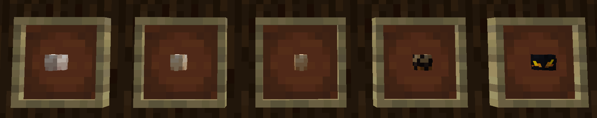
In the image above, you can see the different stages of marshmallow you can get in the mod.
Only the Uncooked on can be crafted, the other are obtained via the new "roasting" mechanic.
They also give special effects depending on what one you eat!
This consists of (from left to right):
Marshmallow Sticks
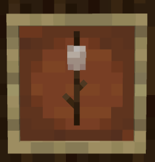
This is what you can use to "roast" marshmallows over campfires (each stage takes about 6 seconds).
You need to stand 2.5 blocks (max) away from the campfire block.
You can put it "over" the campfire by looking at the block, and holding "Right-click" !
Once you have roasted it to you desired stage, you can take it off the stick by pressing "Crouch + Right-click" !
Crackers

This is only used to make smores, but can also be eaten.
Smores
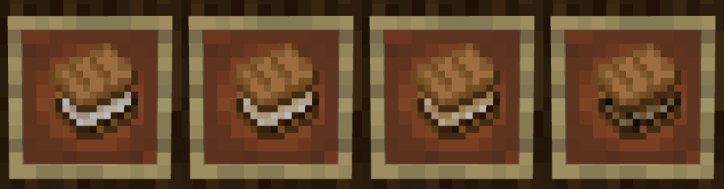
This is what you can use marshmallows for.
You can make one for each stage of marshmallow roastedness. They also give special effects depending on what one you eat!
Blocks:
Copper Campfire
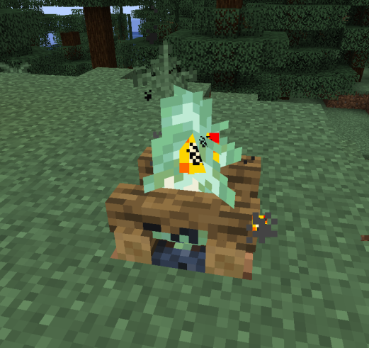
This is a new type of campfire, it doesn't emmit smoke and roasts marshmallows
at half the speed a normal campfire does (so about 3 seconds rather than the normal 6).
Campsites
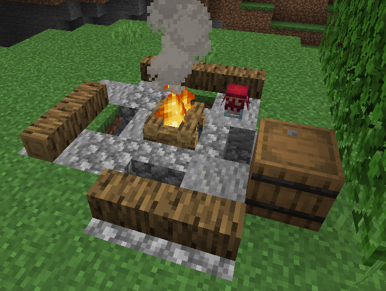
Campsites can spawn in; forest, dark oak forest, taiga, and crimson forest biomes
Jars
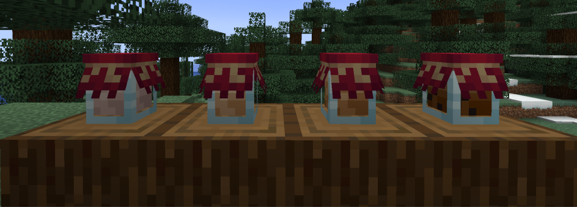
This is a block that can be use to store (up to) 16 Marshmallows of each type.
You can put marshmallows in it by holding one and pressing "Right-click"
on a jar and to take one out just click on it with an empty hand.
You can also use it to put marshmallows on sticks by holding a stick and pressing "Right-click" on a jar.
Logs
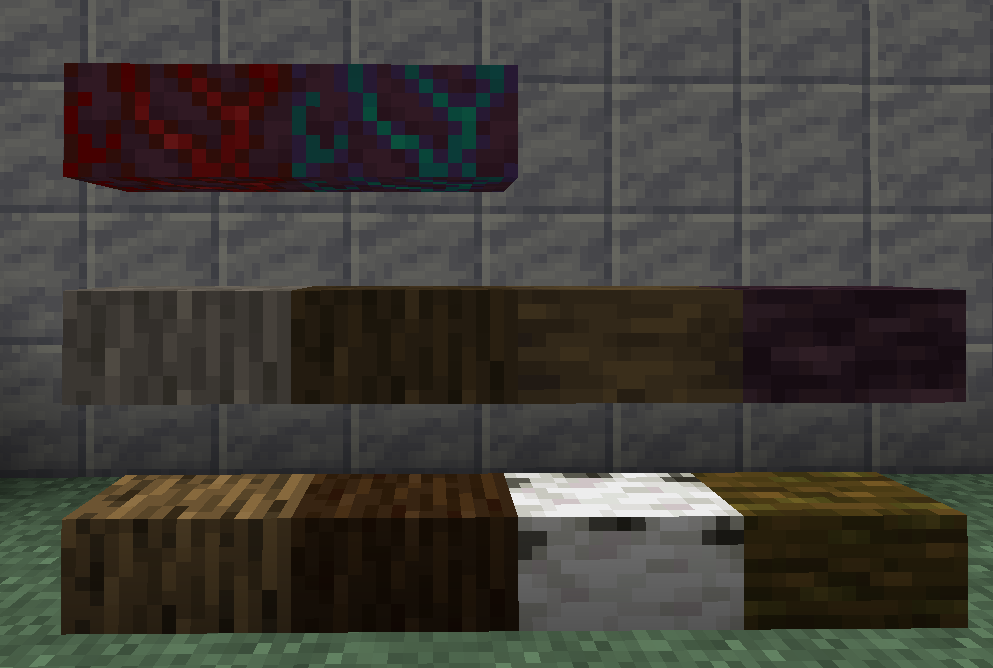
You can sit on these by pressing "Right-click" when looking at one, and to dismount press "Shift"
Recipes
Here you can see everything you can craft in this mod!
Copper Campfire:
Can use any Log block.
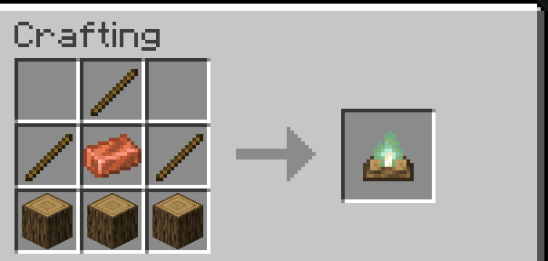
Marshmallow:
\
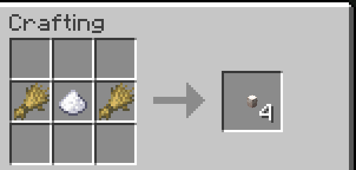
Marshmallow On A Stick:
Can use any Marshmallow item.
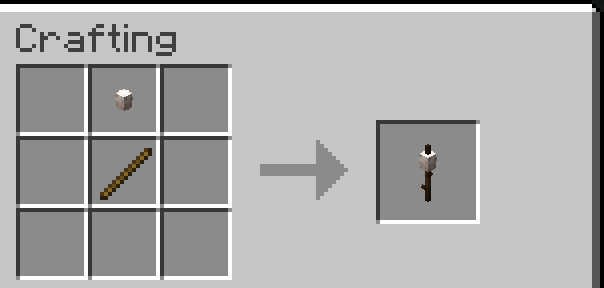
Cracker:
\
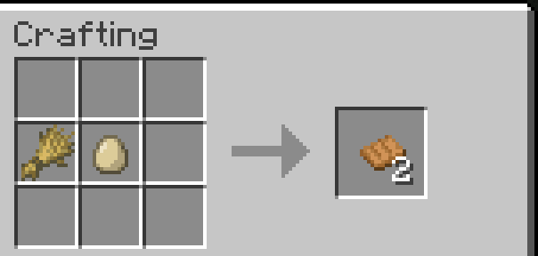
Smore:
Can use any Marshmallow item.
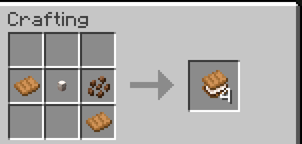
Jar:
Can use any Carpet block.
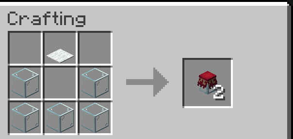
Logs:
Can use any Log block.
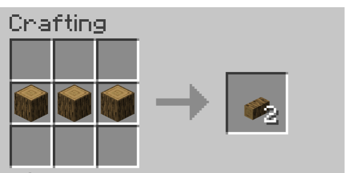
Q&A
I will try to answer as many questions as I can.
If you have a question that isn't here, you can also ask on the GitHub page.
Q: What does this add / do?
- This takes inspiration from Outerwild's Marshmallow mechanics by adding the ability to roast them and much more...
Q: Will this mod be ported to Forge or NeoForge?
- Nope. I just don't have the time to maintain multiple mod versions. You can look at the `DEV TALK` page here for a detailed answer.
Q: How do I get access to betas?
- You can access betas via my Ko-fi page.
Q: Can you add... / How do you use...?
- You can suggest stuff on the GitHub issues page. I will try to answer any questions!
Q: What compatability does the mod have?
- It has compatability with the Create Mod (for recipes), It also has compat with the Tooltip Overhaul Mod (for custom tooltips).
Q: How do you get the creative marshmallow?
- If you have Void Crafting installed and throw a "Perfectly Roasted Marshmallow On A Stick" into the end void, it will show up (up-to 5 blocks) from the end exit portal!